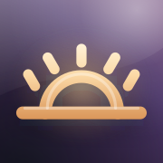

Точка дня
Тёмная тема
Добавьте ярлык этого цвета на главный экран. Выбранный значок будет виден в окне добавления.
iPhone и iPad
- Откройте эту страницу в Safari.
- Нажмите «Поделиться» → «На экран Домой».
- Проверьте цвет значка и нажмите «Добавить».
Android
- Откройте эту страницу в Chrome.
- В меню ⋮ выберите «Установить приложение» или «Добавить на главный экран».
- Если приложение уже установлено, подтвердите обновление значка, когда браузер его предложит. Цвет меняется после подтверждения.
Компьютер
В Chrome или Edge воспользуйтесь значком установки в адресной строке. Для уже установленного приложения откройте меню приложения → «Доступно обновление» и подтвердите новый значок, если браузер предлагает обновление.